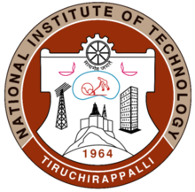

|
Dipobrato Sarbapalli |
|
I am a Ph.D. candidate in Materials Science and Engineering at the University of Illinois at Urbana-Champaign working with Dr. Joaquín Rodríguez-López. My Ph.D. research focuses broadly on the electroanalytical characterization of energy storage systems such as lithium-ion and redox flow batteries. I am trained as an experimental materials scientist, and throughout my academic journey I have followed a research paradigm of characterizing micro- to nano-scale processes within different materials systems so as to understand the governing factors in the practical operation of such materials. I also enjoy scripting in Python (and Matlab) enable efficient data analysis and designing custom experiments which often involve the generation of large volumes of data. My ultimate goal is to enter the industry as a materials engineer or researcher. Prior my doctoral studies, I graduated with an M.S. in Civil Engineering from UIUC in 2018, where I worked with Dr. Paramita Mondal (currently at the University of Delaware) on studying reaction mechanisms in inorganic binder materials. I spent the summer of 2017 working as a DAAD Fellow with BASF at their headquarters in Ludwigshafen, where I worked with Dr. Tobias Umbach. I received my B.Tech in Civil Engineering from NIT Trichy, graduating first class with honors. During my undergraduate studies, I spent my sophomore and junior year summers interning at the IIT Delhi with Dr. Biswajit Bhattacharjee, researching on durability and sustainability of concrete binder materials.
Email /
Résumé /
CV /
Google Scholar /
LinkedIn
|

|
|
Currently, my doctoral research centers on applying electroanalytical techniques to study graphitic interfaces in Li-ion and redox flow batteries. My research has both an electroanalytical and materials component. On the electroanalytical side, I perform characterization of battery performance through bulk techniques such as Cyclic Voltammetry, Amperometry and Potentiostatic Titration measurements, and I utilize Electrochemical Impedance Spectroscopy along with Scanning Electrochemical Microscopy to characterize electrode-electrolyte interfacial processes such as interphase formation and electron transfer rates. On the materials side, I am study the effect of carbon electrode structure and functionalization (edge planes, basal planes, defects, surface functionalization) on its electrochemical performance. I also enjoy devising and working with multi-modal characterization techniques, such as combining electrochemical and spectroscopic methods to reveal chemical and electrochemical events simultaneously, and creating custom cell designs using AutoCAD (and hopefully Solidworks in the near future). |
|
|
|
Tylan S. Watkins, Dipobrato Sarbapalli, Michael J. Counihan, Andrew S. Danis, Jingjing Zhang, Lu Zhang, Kevin R. Zavadil, and Joaquín Rodríguez-López Journal of Materials Chemistry A, \(2020\), [BibTeX] |
|
Zachary T. Gossage, Jingshu Hui, Dipobrato Sarbapalli, and Joaquín Rodríguez-López Analyst, \(2020\), [BibTeX] |
|
A. Nijamudheen, Dipobrato Sarbapalli, Jingshu Hui, Joaquín Rodríguez-López, and Jose L. Mendoza-Cortes ACS Applied Materials and Interfaces, \(2020\), [BibTeX] |
|
Jingshu Hui, Zachary T. Gossage, Dipobrato Sarbapalli, Kenneth Hernández-Burgos, and Joaquín Rodríguez-López Analytical Chemistry, \(2018\), [BibTeX] |
|
Dipobrato Sarbapalli, and Paramita Mondal Proceedings of the 41st International Conference on Advanced Ceramics and Composites, \(2018\) |
|
Dipobrato Sarbapalli, Yash Dhabalia, Kaustav Sarkar, and Bishwajit Bhattacharjee European Journal of Environmental and Civil Engineering, \(2016\), [BibTeX] |
|
|
|  |

|
|||
| NIT Trichy 2011-2015 |
IIT Delhi Summer 2013, 2014 |
UIUC 2015-present |
DAAD Fellow Summer 2017 |
BASF Summer 2017 |
|
|
| • Preliminary examinations: Successfully passed my preliminary exams in Aug 2020! Thanks to my adviser, and committee members Professors Shoemaker, Braun and Zhang. Thanks also to Bhavesh Shrimali, Braun group members Dr. Ashish Kulkarni and Gaurav Singhal, JRL group (specifically Mike Counihan and Abhiroop Mishra) for all the help with the preparation! |
| • Oral Presentation: Presented on the staus of our work with characterizing heterogeneous reactivity between redoxmers on electrode surfaces at the Joint Center for Energy Research (JCESR) - All hands meeting, Argonne National Lab. Meeting was moved online, and over 150 participants joined in for a 2 day meet. |
| • Ph.D. Qualifying Exams: Passed my qualifying exams on Electrochemistry and Ceramics Processing! Onto the next level - Preliminary exams. |
| • Workshop Speaker: I was invited by the American Concrete Institute Student Chapter to deliver a two-hour workshop on using OriginPro for plotting and data analysis. |
| • Poster Presentation: I have been awarded the Best Poster Award at the SEAC Poster Session in PITTCON 2020, Chicago. [Poster PDF] |
| • Poster Presentation: I presented a poster at the Turkey Run Analytical Chemistry Conference, September 2019. |
| • Graduation (M.S.): Graduated with a M.S. in Civil Engineering from the University of Illinois at Urbana-Champaign (August 2018). I will be transitioning into my Ph.D. in Materials Science and Engineering, working with Professor Joaquín Rodríguez-López on electrochemical energy storage. |
| • Teaching Assistant CEE \(\sf 300\) Spring 2018:Returned as a Lab Instructor, supervising ≈60 students in 4 lab sections every week. I was rated as an Outstanding Teaching Assistant. |
| • Teaching Assistant CEE \(\sf 401\) Fall 2017: Returned as the lab TA, rated as Excellent Teaching Assistant. |
| • Fellowship Award: Awarded the DAAD RISE Professional Fellowship for an internship with BASF Ludwigshafen (March 2017). I will be spending my summer working within the Materials Physics Division, Advanced Materials and Systems Research at Ludwigshafen. |
| • Teaching Assistant CEE \(\sf 401\) Fall 2016: Completed my first term as a graduate/senior undergradute TA for "Concrete Materials" and was rated as an Outstanding Teaching Assistant. I guided a lab course of ≈18 graduate and undergraduates in the preparation and testing of fresh and hardened concrete. Prepared a design project for the students in the later half of the course. |
| • Teaching Assistant CEE \(\sf 300\) Spring 2016: Completed my first term as a TA, for "Mechanical Behavior of Materials". I guided a lab section of 16 students in conducting mechanical experiments on materials ranging from steels to polymers. Also held weekly office hours and graded lab reports. |
| • Graduation (B.Tech): Graduated with a B.Tech in Civil Engineering from NIT Trichy (May 2015). I will be joining the Construction Materials program at the University of Illinois at Urbana-Champaign, working with Professor Paramita Mondal. |
|
Template credits Jon and Bhavesh. Last updated: 14th September 2021. |